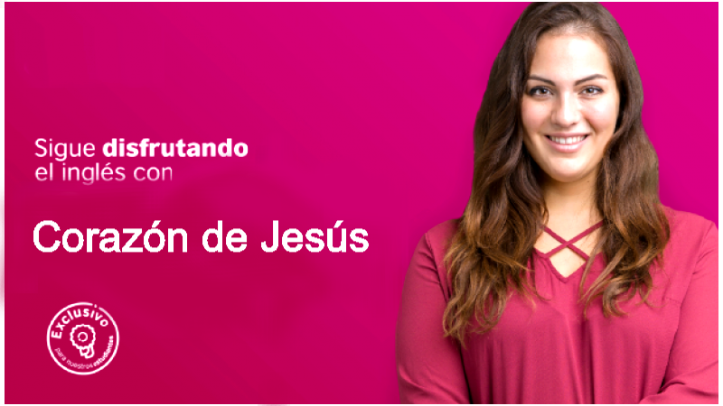

¿Que es el inglés?
Los Tipos De Inglés en el Mundo
Talleres para mejorar el inglés - Corazón de Jesús

Nuestros talleres online para mejorar tu inglés - myClub te ayudan a reforzar la lectura, escritura, escucha, habla, además de darte la oportunidad de practicar el inglés en diferentes ambientes. Creemos que el aprendizaje no debe terminar en el salón de clases y que tener oportunidades para practicar el inglés en ambientes diversos, representa una gran ventaja para el estudio del idioma. Por eso contamos con una gran variedad de talleres para nuestros estudiantes, que les brindan la oportunidad de practicar lo que aprenden fuera del salón de clase.